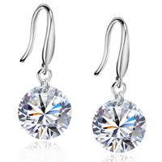
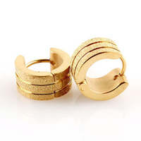

Выбор сережек
При подборе серег особое внимание следует уделить их форме и цвету камней-вставок. Поскольку это наиболее важное ПАРНОЕ украшение. Эффект дублирования одного и того же художественного образа, находящегося в активном поле зрения окружающих, имеет существенное значение. Поскольку серьги оживляют лицо женщины, придавая ему романтическое и игривое выражение, выбор их должен определяться именно гармонией с внешностью каждой прекрасной дамы, а не только велением моды.
Необходимо учитывать природный овал лица. Например, выпуклые, круглые серьги или клипсы, напоминающие крупные пуговицы, зрительно расширяют лицо. Поэтому для широкого овала лучше подобрать небольшие, продолговатой формы, плоские серьги-клипсы или серьги с подвесками.
Лицо с удлиненным овалом, наоборот, большую выразительность получит в обрамлении. Женщинам с правильным овалом везет больше других, поэтому они могут особенно не затрудняться при выборе. Выбирая себе серьги, не забывайте, что любое украшение служит для привлечения внимания. Поэтому обладательницам ушей неправильной формы серьги, акцентирующие мочку уха или ушную раковину, носить не рекомендуется. Однако, закрывая прической уши, можно подобрать серьги с подвесками так, что они, подобно маятнику, будут противоположный пол. Помимо формы серег следует обращать особое внимание и на цветовые сочетания. Необходимо выбирать изделие так, чтобы цвет камней-вставок сочетался с цветом глаз по принципу нюанса или контраста. Выразительность серо-зеленых глаз можно удачно подчеркнуть зеленоватыми оттенками камней, например, агата, хризопраза, малахита, разновидностями бирюзы, берилла и граната. К фисташковым глазам (зеленовато-желтым радужкам) прекрасно подходят оттенки хризолита. К ярко-голубым глазам подходят серьги со вставками насыщенного цвета - из бирюзы, лазурита, черного агата. Небесно-голубым глазам очаровательную неповторимость придадут дополняющие цвета - бледно-оранжевый и золотистый, а также прозрачные камни голубого, синего и фиолетового оттенков. С темными и карими глазами хорошо сочетаются серьги с камнями-вставками насыщенных, ярких цветов, например, рубин, изумруд, золотистый топаз, гранат. Хороши также серьги, подобранные по контрасту с или прозрачными вставками, например, с горным хрусталем, жемчугом, перламутром, янтарем. Подбирая украшение, не забывайте об основном условии хорошего вкуса - чувстве меры. Сочетание украшение - владелец должно радовать окружающих своей гармонией и быть. Поэтому днем носите серьги, не сложные по рисунку, тогда как вечером, на прием, в театр или гости можно надеть самые изысканные украшения - дорогие, сложные по форме, с блестящими или яркими камнями. 
Сверкающие украшения необыкновенно красивы при вечернем освещении. Однако они могут блеск своего величия при дневном свете или в рабочей обстановке. Или, например, крупные серьги-клипсы в виде стилизованных, фантазийных или ажурных цветов носят в сочетании с легкими летними шляпками, прозрачными шарфиками или романтическими платьями. А изделия с бриллиантами, цветными драгоценными камнями или из жемчуга предназначены для шикарных вечерних туалетов. Серьги - это изделие, которое практически все женщины обожают и коллекционируют. Главное при покупке сережек надо помнить, что они должны дополнять Вашу собственную красоту. Стиль изделия должен гармонично сочетаться с чертами и типом Вашего лица. Серьги любого стиля, в не зависимости от того, крупные они или не очень, должны легко, без усилий надеваться на мочку уха. Вот основные правила ношения сережек: миниатюрная женщина может носить крупные, широкие серьги; серьги крупного размера делают нос менее заметным; самоцветы ярче подчеркивают цвет лица; если лицо вытянутой формы, то ему лучше подойдут крупные широкие серьги; если лицо полное, то лучше избегать сережек округлой формы, предпочитая овальный или заостренный дизайн изделия; сережки в форме капли подчеркивают длинную красивую шею. Нужно отметить, что удобство ношения серег во многом зависит от крючка (гвоздика). Во-первых, он должен иметь толщину 1, 0 - 1, 3 мм. Во-вторых, расстояние от основания серьги до зафиксированной в закрытом положении швензы или пуссеты должно быть примерно 5, 5 мм (средняя толщина мочки уха), а общая длина примерно 7, 5 - 9мм. В-третьих, кончик не должен быть острым и на нем не должно быть никаких зазубрин, которые могут каким-либо образом оцарапать ухо. И, безусловно, все должно быть хорошо отполировано. Таким образом, при покупке серег нужно как можно тщательнее подходить к выбору - смотреть не только на лицевую сторону, дизайн, качество закрепки камней (если они имеются), но и на не менее важную часть - замок. Источник: http://www.jewency.ru/article/earring/selearring
© Мир бижутерии «Махаон», 2007–2012
Наш адрес: 443109 Самара, ул. Товарная, 70, офис 16
Тел.: +7 (846) 243-01-53